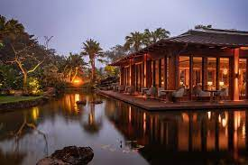
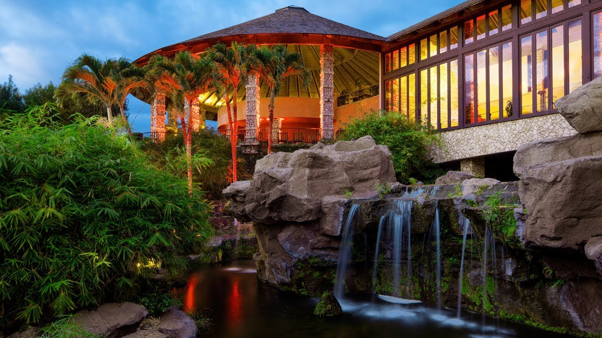

Places to Stay
When traveling to Hawaii it is important to support indigenous owned resorts, so here is a list of a few options!
Sensei Lanai, Four Season Resort

- $2,400 nightly
- 5-star hotel
- Breakfast
- Free Wi-Fi
- Outdoor pool
- Spa
- Horseback riding
Hotel Wailea, Relais & Châteaux

- $1,079 nightly
- 5-star hotel
- Breakfast
- Free Wi-Fi
- 15-acre resort
- Poolside cabanas
- Yoga classes
- Mediterranean dining
Grand Hyatt Kauai Resort & Spa
- $726 nightly
- 5-star hotel
- Breakfast
- Free Wi-Fi
- Tropical luxury resort
- Multiple restaurants and bars
- Has a spa, pools, and evening luaus
Wailea Beach Villas: Destination Residences
- $800-$2000 nightly
- 4-star hotel
- Free Wi-Fi
- Free parking
- Has pools and a spa
- Fitness center
Kalani Oceanside Retreat
- $206 nightly
- Villa
- Sleeps five people
- 2 Bedrooms
- Vacation rental
- Great views
- Great villa layout
Activities
Kilohana Plantation, Kauai
- Once was a sugar plantation
- Visitors can ride the vintage train around the 14 hectare gardens
- Luau dinner with traditional Polynesian cusine
- Torch lighting
- view the underground oven
- Traditional instruments or music and hula dancers after dinner
- Hawaiian music tells the story of the Tahitian migration to Hawaii
Hana Cultural Center, Maui
- Takes visitors back in time
- Get to see stone implements, fish nets and poi boards were used to hunt, fish, work and prepare meals
- Cultural centre devotes itself to preserving and exhibiting Maui's traditional way of life with tools, photos, and artifacts
- Gift shop sells locally made crafts
Annual Waikiki Hoolaulea
- 64th annual Waikiki Hoolaulea took place on Kalakaua Avenue in Waikiki
- It was Hawaii's largest block party
- Event showcased Hawaiian music, food, crafts, and even flower leis
- It is a cultural event and local party making visitors feel welcomed and embrace the Hawaiian spirit.
Food and Drinks
Spam Musubi
- handheld snack
- small block of rice comes topped with a splice of Spam and wrapped in nori (seaweed)
- enjoyed both hot and at room temperature
- found everywhere from convenience stores to potlucks
Mochiko Chicken
- Hawaii's popcorn chicken
- Bit-sized pieces of chicken which are marinated in a mochiko flour (sweet rice flour) mixture and is deep fried
- Crispy, juicy, garlicky
- Dish served hot, usually with a bowl of rice as part of bento box
Malasadas
- Doughnut
- Has Portuguese origins
- Fried dough, rolled in sugar
- Has more egg than a regular donut
- No hole in the center
- It can be filled with haupia (Hawaiian pudding) or chocolate pudding
Virgin Mai Tai
- It is a true Polynesian classic
- Non-alcoholic, however, they are usually alcoholic
- It consists of 1 oz of lime, orange, and lemon juice, 2 oz of pineapple juice and orgeat syrup, ice, and a pineapple wedge for garnish
Maui Cruiser
- It is a flavorful fruit smoothie served in a hurricane glass
- Non-alcoholic
- Made of fresh pineapple, orange, guava, passion fruit juices
- blended with strawberry and mango purée
- garnished with either a little with a pineapple
Banana Mango Smoothie
- A fresh and flavorful non-alcoholic drink
- Made with fresh bananas and mango
- Serve blended
- Needs 3 to 5 fresh banana (strawberries or apples are sometimes used for extra flavor
- A little bit of honey, ice, and 1/4 cup of fresh coconut milk or apple juice is also needed
Hula
There are many types of hula dances as they have their unique differences. It is important to respect each of these dances! You can do this by learning the differences of each of these dances.
Hula Kahiko
- Kahiko means ancient and primitive
- These dances are accompanied by chants called oli (oh-lee)
- it combines the movements to tell stories of different islands and their beauty, exploits of royalty, people of the islands, major events, and more.
- There is a difference between wahine (women) and kane (men) dances
Types of Hula Kahiko
- Hula Ali'i
- Hula 'Ili 'ili
- Hula Holoholona
- Hula Pele
Hula 'Auana
- Modern hula
- Was created in response to Western influences that came to the islands
- 'Auana means to wonder or ramble
- While Hula 'Auana also tells stories through movement and song, it is contemporary in nature, and is what most people think when they think of hula dancing
- Hula ' Auana is performed with a variety of musical instruments like the ukulele and steel guitar
- Another form is Hula Hapa Haole which means part foreign, it uses English words in the lyrics instead of the Hawaiian language